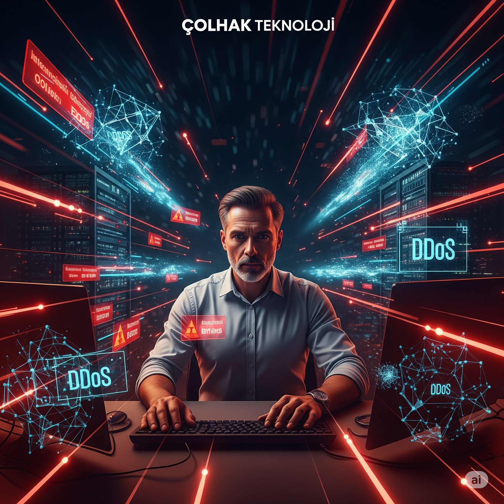
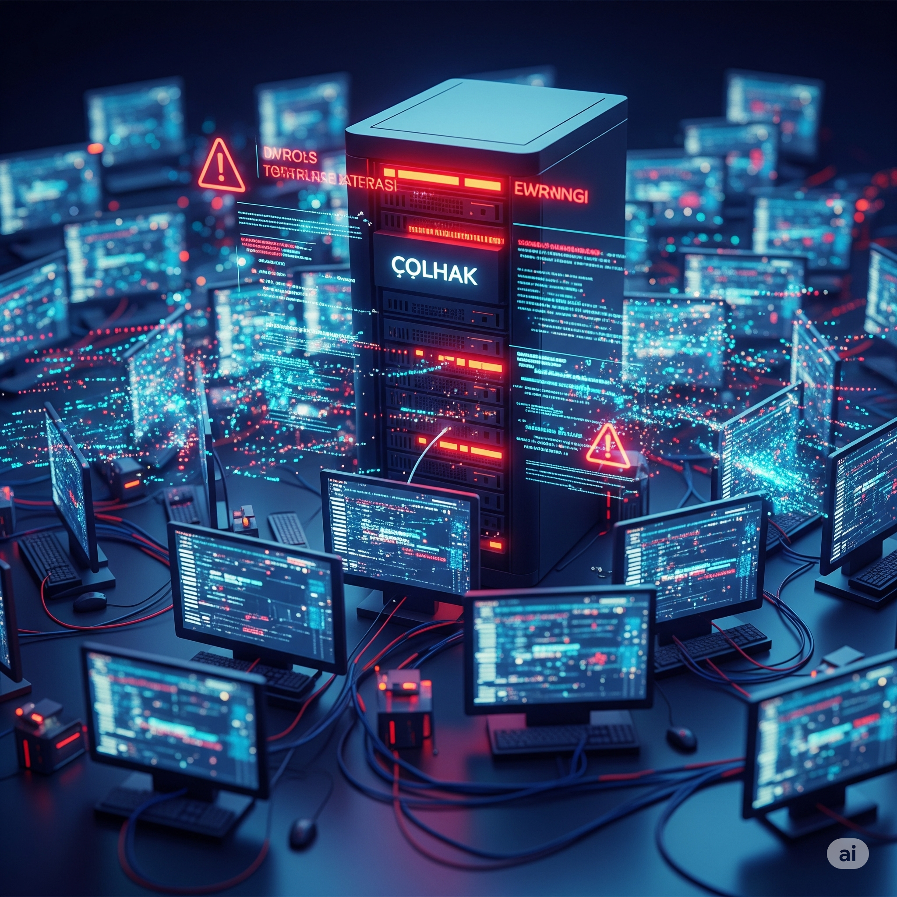
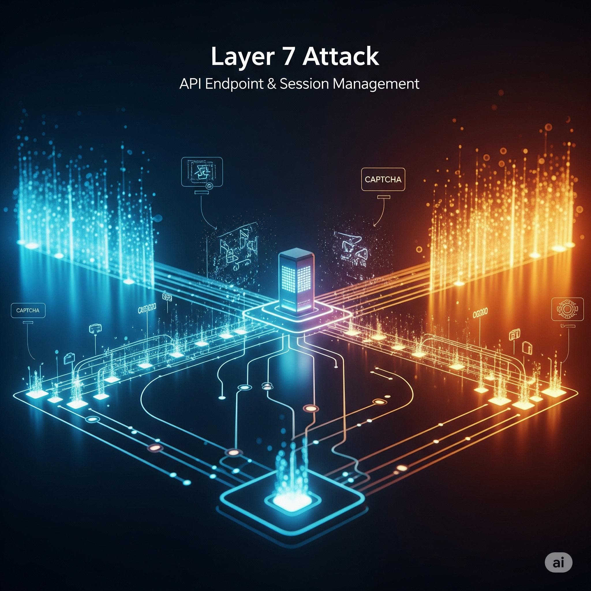

Welcome, **COLHAK Technology**'s **SOC Analyst**! Your mission is critical:
You are under a **large-scale DDoS attack** by an international botnet targeting your company's main
servers. Websites, services, and even internal network connections are about to be interrupted. This
attack
threatens business continuity by overloading systems and causing massive damage to your reputation. Your
mission: Race against time to mitigate the attack, divert traffic, protect infrastructure, and ensure
business continuity!

Simulation Roles
Your Role: SOC Analyst
You are responsible for the security of the company's network infrastructure. You
play an
active role in DDoS mitigation steps. Your choices will directly affect the
outcome.
CISO Melih Kaan Responsible for security, expects fast and
effective
mitigation.
CTO Onur Güngor Infrastructure performance and business
continuity are
priorities.
CEO Ayfer Yıldız Wants to minimize company reputation damage
and
financial losses.
CDN/DDoS Protection Provider Will provide external support, but
may not
always respond quickly.
Key Metrics
System Load Resistance of servers against DDoS traffic. (Start:
Highly
High)
Attack Effectiveness Strength and impact of the DDoS attack.
(Start:
Full)
Financial Loss Cost caused by the outage. (Start: $0)
Downtime Total time of service interruption. (Start: 0
Minutes)
Customer Satisfaction Customer satisfaction with service
access.
(Start: 100)
Decision Impact
Strategic Assessment
System Load
Extreme High
Attack Effectiveness
Full
Financial Loss
$0
Downtime
0 Minutes
Customer Satisfaction
100
Time Remaining
04:00
Phase 1: Initial Detection and Traffic Anomaly
Time 0:00 - Traffic Alert!
Midnight, critical alerts started coming from your network monitoring systems: "Abnormal traffic
spike detected!" In a short time, you realized that a distributed and intense flood of requests,
dozens of times larger than normal traffic, was heading towards your main servers. This is an
obvious **large-scale DDoS attack**! Your website has started to slow down, and some users are
experiencing access issues.

Learning Note: Speed of initial response is vital in
DDoS attacks. Using your own existing capabilities can be a quick solution, but ISP support is
necessary for larger attacks.
Phase 2: Contacting CDN/DDoS Protection Provider
Time 0:45 - Response from CDN Provider!
Although your on-prem solutions provided some relief, the magnitude of the attack continues. With
the approval of the CISO and CTO, you started an urgent meeting with your CDN and DDoS
protection provider (e.g. CloudFlare, Akamai). You conveyed the situation in detail. The
provider stated that they could deploy the traffic scrubbing service at full capacity, but that
full activation and traffic diversion **could take about 15-30 minutes**.
What will you do to ensure business continuity during this waiting period?
Learning Note: The deployment time of external
mitigation solutions in DDoS attacks is important. Managing internal resources during this time
is critical to minimize downtime.
Phase 3: Traffic Diversion and Damage Control
Time 1:30 - Traffic Scrubbing Started!
Your CDN provider has stepped in and started scrubbing attack traffic. Initial signals are
positive, system load is slowly decreasing. However, the attackers seem to have changed tactics;
focusing on Layer 7 (application layer) attacks, targeting specific API endpoints and session
management. This is a smarter attack type focusing on resource exhaustion rather than bandwidth.
CTO Onur Güngor is calling: "Attack power has decreased but we still have access issues! APIs
have slowed down. We continue to receive complaints from our customers. What are we doing
against this Layer 7 attack?"

Learning Note: Layer 7 DDoS attacks are more
sophisticated and cause service interruption through resource exhaustion. Application layer
measures like rate limiting and CAPTCHA are important against such attacks.
Phase 4: Communication and Reputation Management
Time 2:30 - Media and Customer Pressure!
The impact of the DDoS attack has spread to the public. Complaints on social media are growing
like an avalanche, some news sites are carrying COLHAK Technology's service interruptions to
their headlines. Especially the fact that a major e-commerce launch is to be held this week is
driving CEO Ayfer Yıldız crazy: "This situation endangers the launch! Our trust is being
shaken. What explanation will we give to customers? What will be our financial losses?"
Your PR team and legal advisors are requesting an urgent meeting regarding the content and timing
of the public statement.
Learning Note: Communication strategy in cybersecurity
incidents directly affects reputation and customer trust. Transparency is usually the best
approach.
Phase 5: Post-Attack Recovery and Lessons Learned
Time 3:30 - Attack Under Control!
Thanks to the full support of your CDN provider and your proactive interventions, the DDoS attack
has finally been brought under control. Traffic has returned to normal levels and your services
are fully accessible. However, it's time to evaluate the impact of the attack and strengthen
your infrastructure against future attacks. You are holding a post-crisis meeting with the CISO,
CTO, and CEO.
With the lessons learned from this massive DDoS attack, how will you strengthen your future
defense?
Learning Note: Lessons learned after DDoS attacks are
critical for future resilience. Technology investments, training, and architectural changes
provide long-term protection.
Phase 6: Investigation and Attribution
Time 4:30 - On the Attacker's Trail
The attack has been completely stopped and systems are stable. CISO Melih Kaan wants you to focus
on finding out who attacked and why. The digital forensics team has identified three possible
suspects by analyzing attack vectors, source IPs, and traffic patterns.
Suspect 1: Disruptor Tech (Competitor Firm)
Motivation: To sabotage COLHAK Technology's major e-commerce launch and gain
market advantage. Evidence: The attack was a sophisticated Layer 7 (application layer) attack
specifically targeting API endpoints related to the new product. This might indicate they
have knowledge of your company's internal workings.
Suspect 2: Digital Justice Front (Hacktivist Group)
Motivation: To protest COLHAK Technology's recently announced and
controversial data policies. Evidence: During the attack, numerous posts criticizing your company were
made from social media accounts associated with the group. The attack was high-volume but
less complex Layer 3/4 (network layer) focused.
Suspect 3: Crypto-Lock Gang (Ransom Group)
Motivation: Purely financial. To demand ransom by taking the company
offline. Evidence: It was seen that 24 hours before the attack, a low-profile email
falling into the spam folder demanded a 5 BTC payment "to prevent interruptions in your
services". The botnet used had been seen in previous attacks associated with this group.
Now it's time to decide: In light of the collected evidence, who do you believe is behind
the attack? This decision will affect the legal process and future defense priorities.
Post-DDoS Crisis Assessment Report
Simulation completed. A detailed breakdown of your DDoS attack management performance is below.